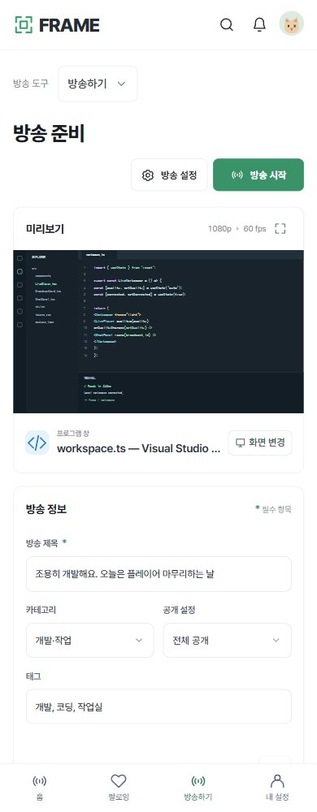
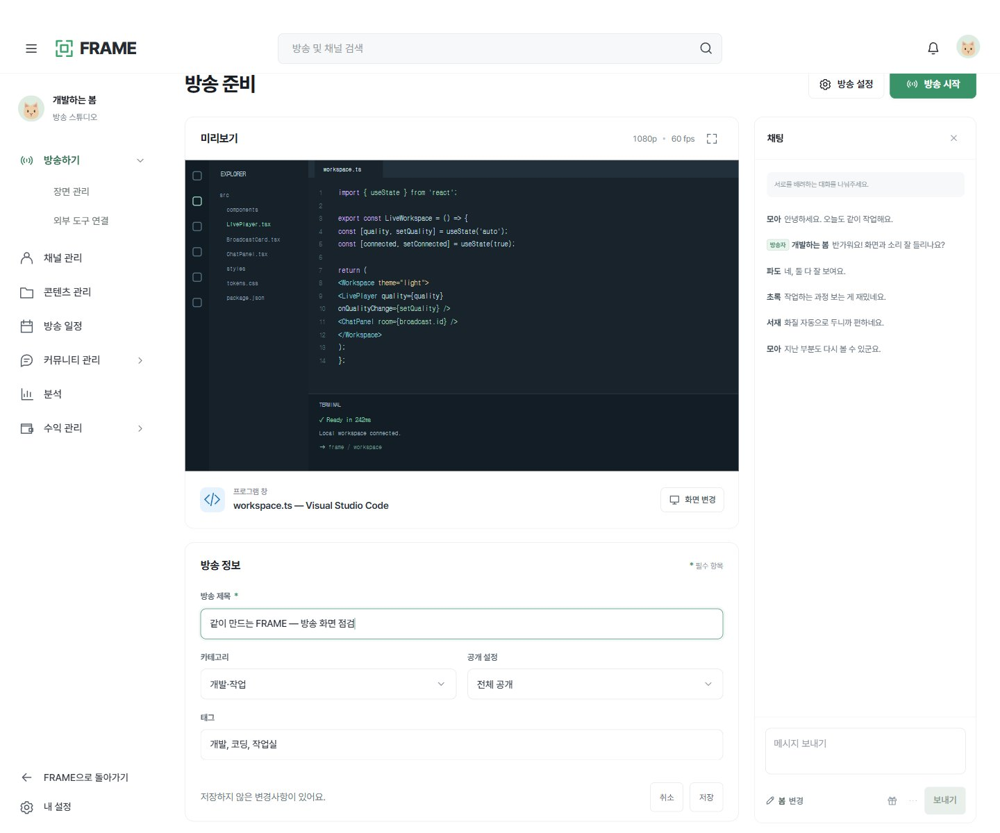
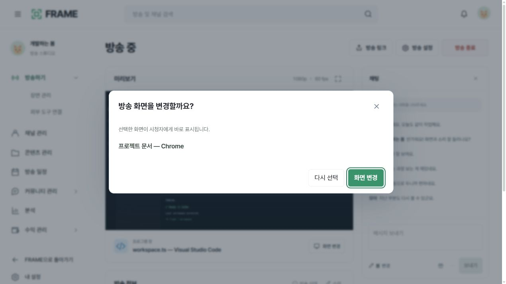
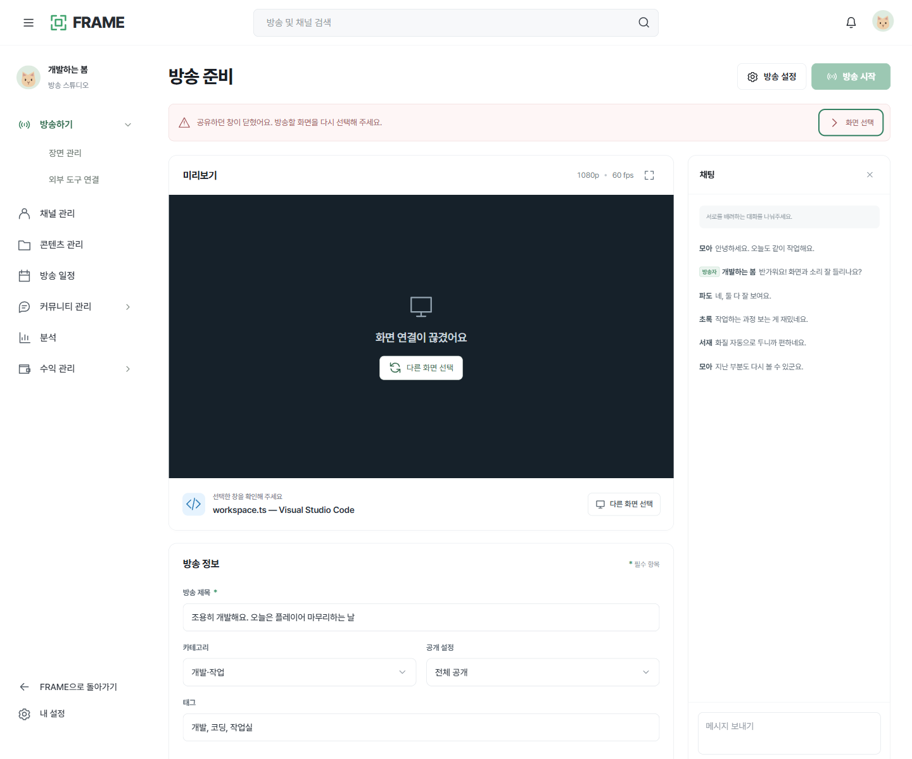
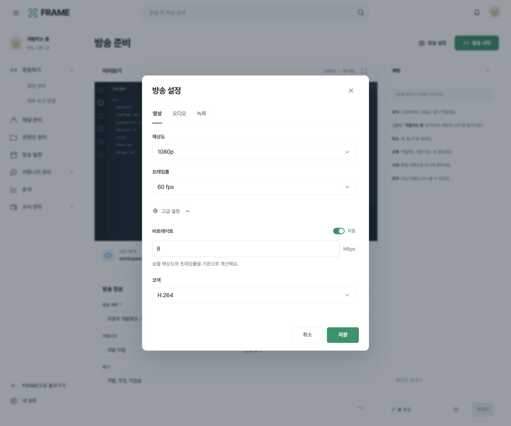
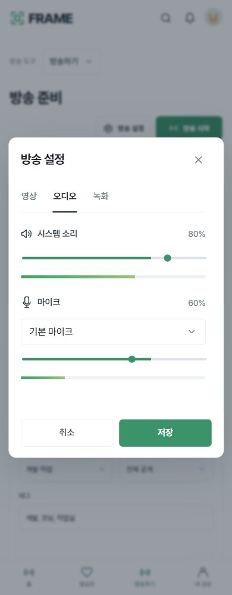
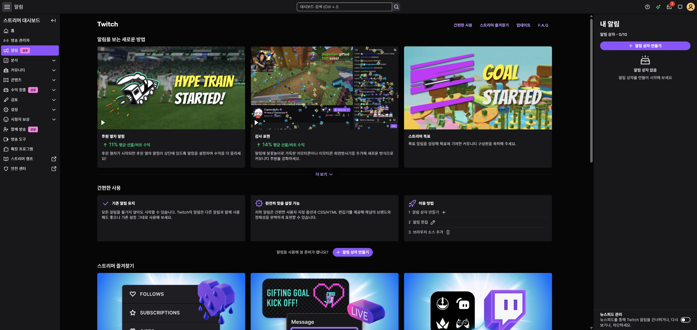
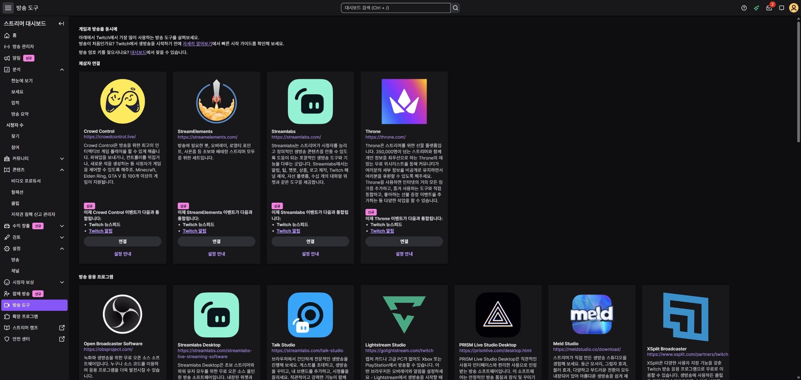

치지직
스튜디오, 만들기 메뉴, 방송 관리 하위 메뉴, 오프라인 방송 콘솔, 카테고리 선택, 채팅 이용 권한, 뉴스피드 필터, 송출 안내, 오버레이 설정, 금칙어·제한 목록, 방송 설정의 안전 영역, 라이브 목록, 리허설 준비 화면을 확인했습니다.
리모컨은 이용 자격 안내까지 확인했습니다. 일부 별도 팝업의 캡처 실패는 조사 기록에 구분했습니다. 실방송·리허설 개시는 실행하지 않았습니다.
동의창을 지나 실제 치지직 스튜디오와 Twitch 방송자 대시보드에 접근해, 준비·연결·운영 흐름을 대조했습니다.
로딩·팝오버·빈 상태를 포함한 화면 상태 수입니다. 모든 메뉴와 실방송 기능을 검증한 수치는 아닙니다.
| 영역 | 실제 서비스에서 확인 | FRAME에 반영 |
|---|---|---|
| 방송 준비 | 치지직은 방송 콘솔 진입 후 제목·카테고리·태그·썸네일·시청 제한·다시보기 공개 방식을 편집해요. Twitch는 방송 정보 편집에서 제목·알림·카테고리·태그·언어·콘텐츠 분류를 모아요. | FRAME은 화면 선택과 방송 정보 입력을 유지하고, 초안과 저장값을 구분했어요. |
| 송출 연결 | 두 서비스 모두 외부 방송 프로그램을 연결하는 설정과 웹 운영 화면을 구분해요. 치지직의 방송하기 메뉴는 콘솔로 이동하는 동작이에요. | FRAME은 자체 캡처·송출 방식이 있으므로 외부 도구 연결을 모든 사용자에게 강요하지 않아요. 연결 설정을 닫으면 원래 화면으로 복귀해요. |
| 방송 중 운영 | 미리보기·방송 정보 수정·채팅·활동 내역·빠른 설정을 중심으로 구성해요. 현재 관찰한 화면은 오프라인 운영 화면이에요. | 기존 미리보기와 채팅 배치를 유지했어요. 방송 중 대상 변경은 적용 전 확인하고, 시안의 오류 상태에서는 시작을 막아요. |
| 채팅 설정 | Twitch는 개인 표시 설정, 채널 전체 모드, 운영 작업을 구분해요. 채팅 스크롤 중 자동 정지 동작도 별도로 안내해요. 치지직은 이용 권한과 빠른 설정을 운영 화면에 둬요. | 기존 닉네임 변경과 읽는 위치 유지 동작을 보존했어요. 실제 채널 권한·차단·운영자 검증은 서버 구현이 필요해요. |
| 저장·취소 | 치지직 방송 정보는 업데이트 전후를 구분하고, 변경이 없을 때는 버튼이 비활성화돼요. | 방송 정보와 출력 설정의 저장 경계를 정리했어요. 설정 취소·닫기·ESC·뒤로가기는 초안을 폐기해요. |

화면 선택, 방송 정보, 채팅의 기존 배치를 유지했어요.
실행 시안 →
화면과 방송 정보, 채팅을 한 열로 확인해요.
실행 시안 →
변경했을 때만 저장할 수 있고 취소하면 저장값으로 돌아가요.
실행 시안 →
시청자에게 새 화면을 보여주기 전에 한 번 확인해요.
실행 시안 →
문제가 있는 상태에서는 시작을 막고 복구할 곳을 보여줘요.
실행 시안 →
영상·오디오·녹화의 제어 모양과 선택 범위를 유지했어요.
실행 시안 →
저장한 음량을 다시 열어도 유지하고 취소한 변경은 되돌려요.
실행 시안 →스튜디오, 만들기 메뉴, 방송 관리 하위 메뉴, 오프라인 방송 콘솔, 카테고리 선택, 채팅 이용 권한, 뉴스피드 필터, 송출 안내, 오버레이 설정, 금칙어·제한 목록, 방송 설정의 안전 영역, 라이브 목록, 리허설 준비 화면을 확인했습니다.
리모컨은 이용 자격 안내까지 확인했습니다. 일부 별도 팝업의 캡처 실패는 조사 기록에 구분했습니다. 실방송·리허설 개시는 실행하지 않았습니다.
방송 관리자, 방송 정보와 콘텐츠 분류, 빠른 실행, 미리보기 옵션, 채팅 설정과 스크롤 정지, 활동 필터·알림·소리, 방송 설정과 레이드 정책, 채널 소개·브랜드·일정, 녹화·클립·방송 요약의 빈 상태를 확인했습니다.
수익·커뮤니티·보상·확장 프로그램의 모든 하위 화면과 실제 방송 중 상태는 조사하지 않았습니다. 표시·복사·초기화 없이 키를 가린 상태로만 확인했습니다.
이전 약관 차단 기록은 당시 조사로 보존했습니다. 계정 원본과 키 관련 화면은 배포 폴더에 복사하지 않았습니다.

아직 생성한 항목이 없을 때 시작 동작을 제시합니다.

송출 도구 연결은 운영 화면과 구분합니다.